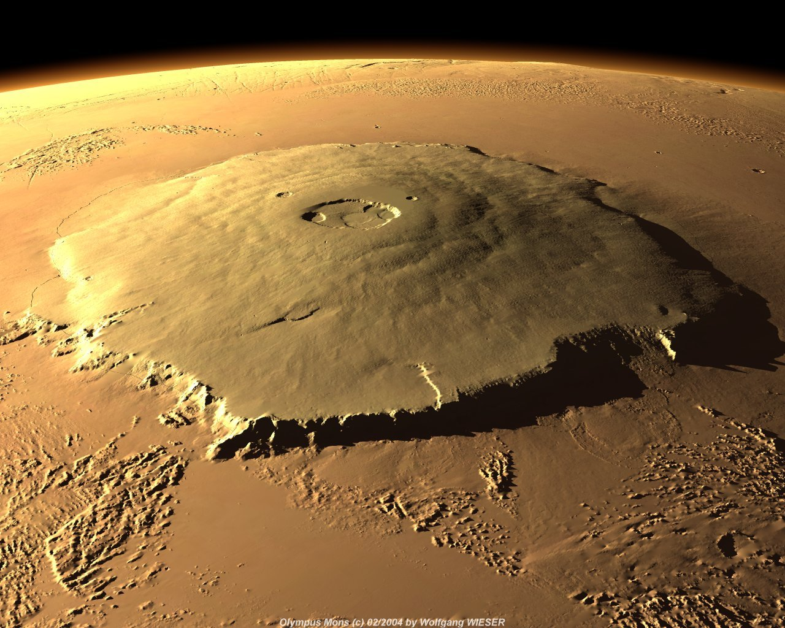
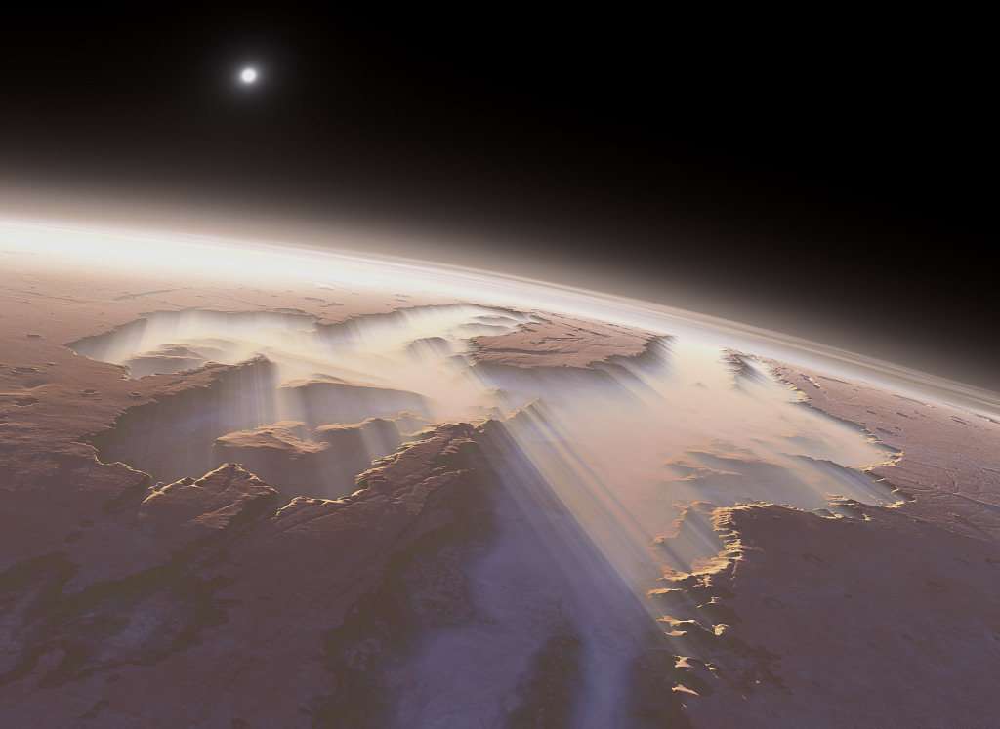
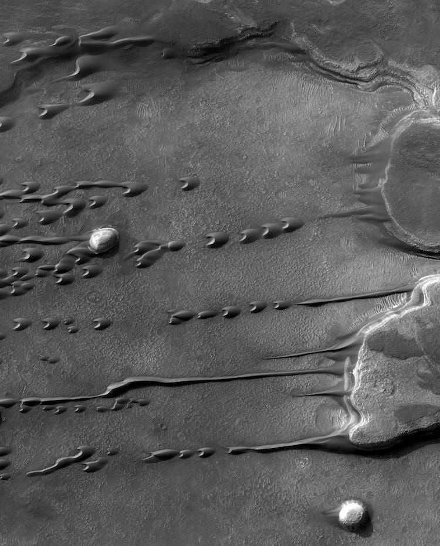
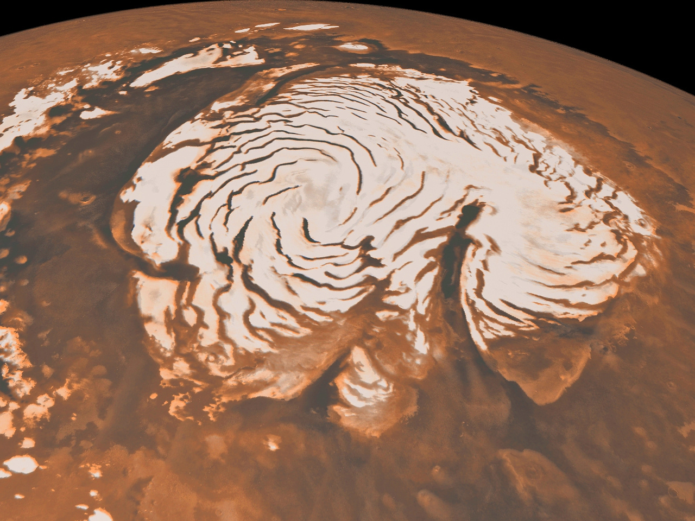

Olympus Mons is a large shield volcano on Mars. The volcano has a height of over 26 km

Valles Marineris is a system of canyons that runs along the Martian surface. At more than 4,000 km long, 200 km wide and up to 7 km deep, Valles Marineris is one of the largest canyons of the Solar System

Ghost dunes are the hardened casts of ancient sand dunes, created when lava or sediments seeped and solidified around the lower contours of the dunes. As winds eventually dispersed the sand on top, the negative space where the dune once stood was preserved as a pit on the martian surface

Planum Boreum is the northern polar plain on Mars. Surrounding the plain is a flat and featureless lowland plain called Vastitas Borealis which extends for approximately 1500 kilometres southwards, dominating the northern hemisphere